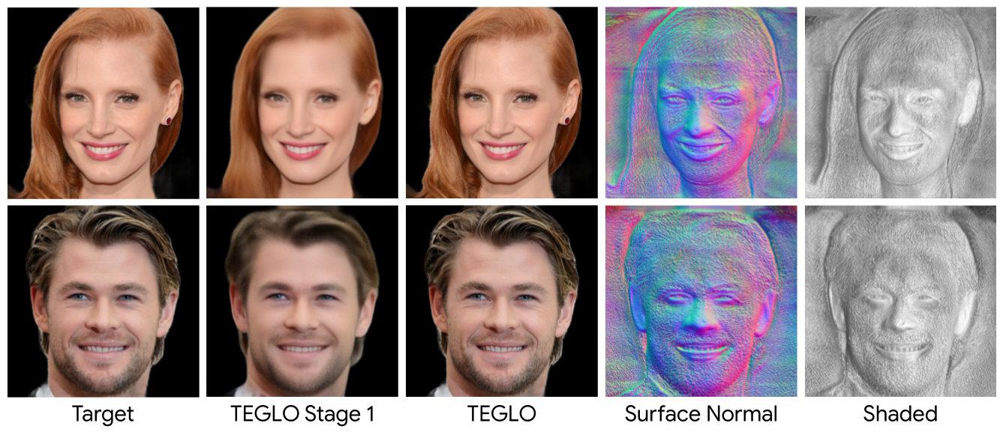

Novel views in high-resolution (1024x1024) with high-frequency details.

Novel views in high-resolution (1024x1024) with high-frequency details.

Recent work in Neural Fields (NFs) learn 3D representations from class-specific single view image collections. However, they are unable to reconstruct the input data preserving high-frequency details. Further, these methods do not disentangle appearance from geometry and hence are not suitable for tasks such as texture transfer and editing. In this work, we propose TEGLO (Textured EG3D-GLO) for learning 3D representations from single view in-the-wild image collections for a given class of objects. We accomplish this by training a conditional Neural Radiance Field (NeRF) without any explicit 3D supervision. We equip our method with editing capabilities by creating a dense correspondence mapping to a 2D canonical space. We demonstrate that such mapping enables texture transfer and texture editing without requiring meshes with shared topology. Our key insight is that by mapping the input image pixels onto the texture space we can achieve near perfect reconstruction (>= 74 dB PSNR at 10242 resolution). Our formulation allows for high quality 3D consistent novel view synthesis with high-frequency details at megapixel image resolution.
@article{vinod2023teglo,
author = {Vinod, Vishal and Shah, Tanmay and Lagun, Dmitry},
title = {{TEGLO}: High Fidelity Canonical Texture Mapping from Single-View Images},
journal = {arXiv:preprint},
year = {2023},
}